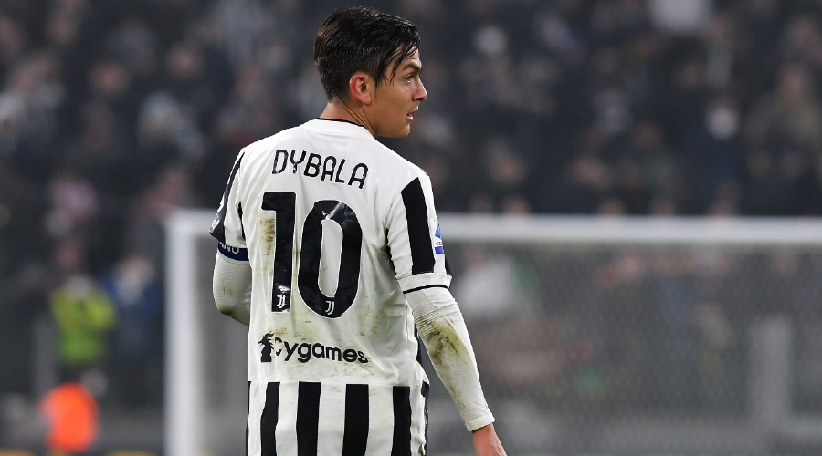

Paulo Exequiel Dybala (rojen 15. novembra 1993) je argentinski profesionalni nogometaš, ki igra kot napadalec za klub Serie A Roma in argentinsko reprezentanco. Dybala z vzdevkom "La Joya" ("Dragulj") [2] je svojo seniorsko klubsko kariero začel leta 2011 z igranjem za Instituto de Córdoba, preden je leta 2012 pri 18 letih podpisal za Palermo, kjer je osvojil naslov Serie B. Leta 2015 je Dybala podpisal za Juventus in osvojil pet naslovov prvaka ter štiri Coppas Italia. Enkrat je bil tudi izbran za najkoristnejšega igralca Serie A, štirikrat je bil vključen tudi v ekipo leta Serie A in je deveti najboljši strelec Juventusa vseh časov. Dybala je leta 2015 pri 21 letih debitiral za člansko reprezentanco Argentine in od takrat zbral več kot 30 nastopov, vključno z nastopom na Svetovnem prvenstvu v nogometu 2018 in Copa América 2019. V slednjem je dosegel zmagoviti gol in pomagal svoji državi na tretjem mestu.
back